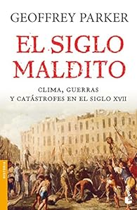

Libros Edad Moderna
El siglo maldito

Revoluciones, sequías, hambrunas, invasiones, guerras, regicidios... Los desastres que se sucedieron en la segunda mitad del siglo XVII no sólo no tenían precedentes, sino que se propagaron por el globo de una forma atroz.
Comprar LibroUn tiempo de guerras: Una historia alternativa de Europa 1450-1700

Martines cuenta la visión de las guerras de gran parte de la historia moderna desde el punto de vista de la gente de abajo. Es decir, del Tercer Estado: soldados, campesinos, burgueses, etc.
Comprar Libro